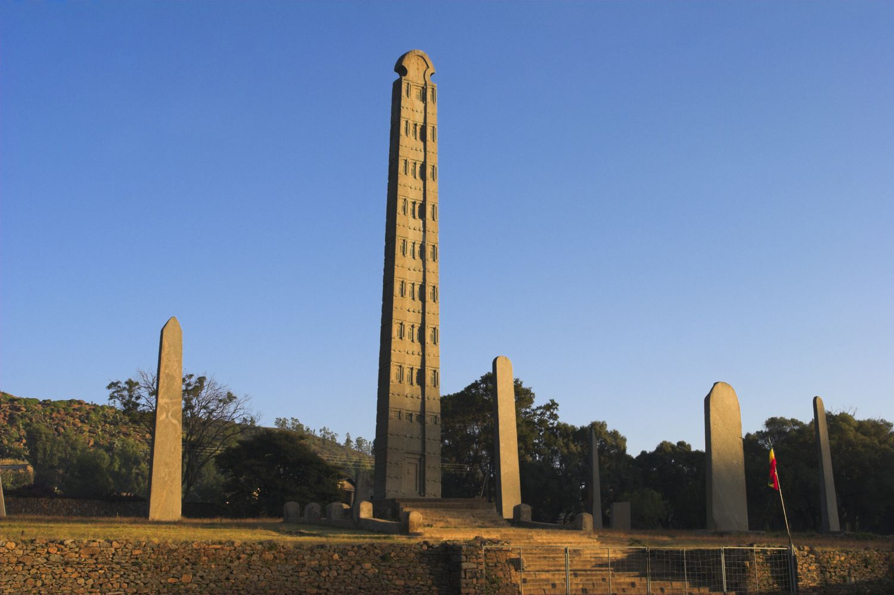

Top Destinations
Explore the beautiful landscapes and historic sites of Ethiopia.
Lalibela

Lalibela is famous for its rock-hewn churches, dating back to the 12th and 13th centuries. These impressive structures are carved directly into the stone and are considered one of the wonders of the world. Lalibela is a UNESCO World Heritage Site and a pilgrimage destination for Ethiopian Orthodox Christians.
Visit Lalibela
Simien Mountains National Park
The Simien Mountains National Park offers breathtaking landscapes with rugged mountain peaks, deep valleys, and unique wildlife such as the Gelada baboon and Ethiopian wolf. It is a UNESCO World Heritage Site and a paradise for trekking enthusiasts.
Visit Simien Mountains
Aksum

Aksum is an ancient city known for its towering obelisks, royal tombs, and archaeological sites dating back over 2,000 years. It was once the capital of the Aksumite Empire, one of the great civilizations of the ancient world.
Visit Aksum
Harar Jugol

Harar Jugol is a walled city with a unique cultural heritage and Islamic architecture. It is known for its narrow alleyways, traditional houses with colorful doors, and the Hyena Man ritual where locals feed hyenas by hand every night.
Visit Harar Jugol